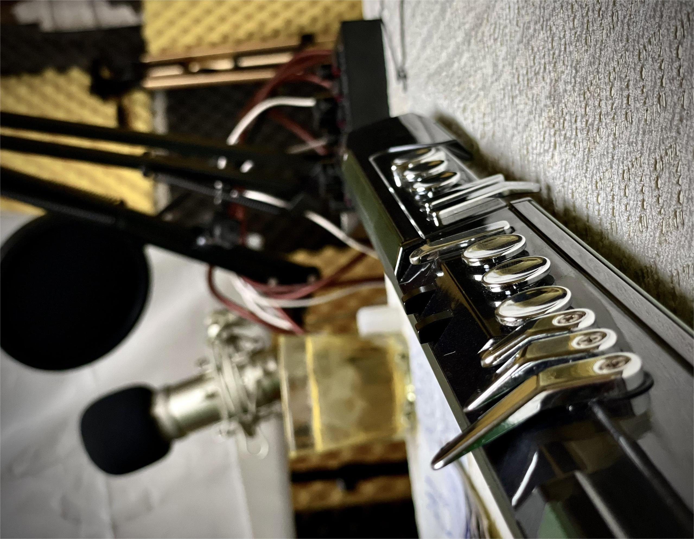
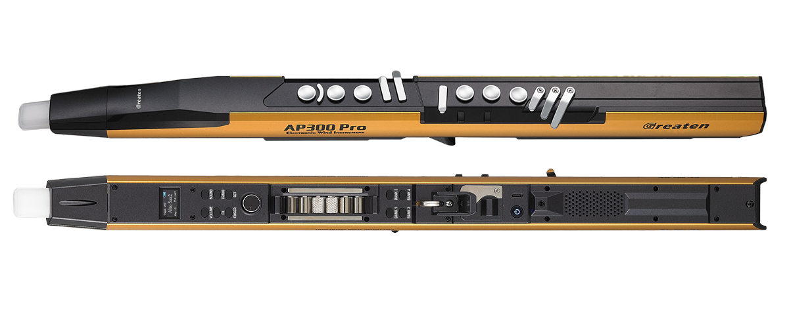

SÁO ĐIỆN TỬ HAY KÈN ĐIỆN TỬ?
NGHỆ THUẬT ÂM NHẠC ĐỘC ĐÁO VÀ HIỆN ĐẠI Sáo điện tử (kèn điện tử) là một công cụ âm nhạc độc đáo và hiện đại, kết hợp giữa nghệ thuật truyền thống của sáo với công nghệ điện tử tiên tiến. Trong bài viết này, chúng ta sẽ khám phá sâu hơn về sáo điện tử (kèn điện tử), từ nguyên lý hoạt động đến cách chơi và ứng dụng trong âm nhạc ngày nay.  Sáo điện tử hay kèn điện tử? Sáo điện tử còn được gọi cách khác là kèn điện tử, đều là nhạc cụ bộ hơi - Tên tiếng anh là Electronic Wind Instrument hoặc Digital Wind Instrument, một loại nhạc cụ kỹ thuật số được thiết kế để tái tạo âm thanh của sáo truyền thống thông qua việc sử dụng linh kiện điện tử và công nghệ âm thanh. Điểm đặc biệt của sáo điện tử là khả năng tùy chỉnh và điều chỉnh âm thanh, cũng như khả năng kết hợp với các hiệu ứng âm thanh điện tử khác nhau. Lịch sử phát triển của sáo điện tử (kèn điện tử) Nhạc cụ điện tử được phát triển vào những năm 1930. Nguồn gốc của sáo điện tử có thể được truy ngược lại đến các nhà phát minh như Thaddeus Cahill, người đã phát triển một thiết bị gọi là "Telharmonium" vào năm 1897, được coi là một trong những nhạc cụ điện tử đầu tiên. Sự ra đời của sáo điện tử được ghi nhận vào năm 1935 khi Hugh Le Caine, một nhà vật lý người Canada, đã chế tạo ra một loại sáo điện tử đầu tiên. Thiết bị này sử dụng các ống điện tử và mạch điện tử để tạo ra âm thanh, cho phép người chơi điều khiển độ cao, độ lớn và chất lượng âm thanh một cách linh hoạt hơn so với các nhạc cụ truyền thống. Trong những năm 1950 và 1960, sáo điện tử trở nên rất phổ biến trong các ban nhạc jazz, rock và nhạc cổ điển. Các nhạc sĩ như Miles Davis, Stevie Wonder và Jean-Michel Jarre đã sử dụng sáo điện tử trong các tác phẩm của họ, góp phần tạo ra một bước ngoặt trong âm nhạc điện tử và synth pop. Ngày nay, sáo điện tử vẫn là một nhạc cụ dần phát triển hơn trong nhiều thể loại âm nhạc, từ jazz, rock cho đến âm nhạc điện tử và nhạc phim. Công nghệ đã tiến bộ, cho phép các nhạc sĩ điều khiển và biến đổi âm thanh sáo điện tử một cách linh hoạt hơn. Cấu tạo và nguyên lý hoạt động của sáo điện tử  Sáo điện tử (kèn điện tử) bao gồm các thành phần chính sau: * Phím bấm hoặc bảng điều khiển: Đây là nơi người chơi tương tác với kèn điện tử để tạo ra các âm thanh. Bàn phím có thể bao gồm các phím, nút, núm vặn, hoặc các thiết bị điều khiển khác. Thông qua bàn phím, người chơi có thể điều khiển độ cao, độ lớn, và các đặc tính âm thanh khác. * Bộ phát âm (Oscillator): Bộ phát âm là thành phần chịu trách nhiệm tạo ra các sóng âm thanh cơ bản. Nó có thể sử dụng các ống điện tử, bán dẫn, hoặc các mạch tích hợp hiện đại để tạo ra các tín hiệu điện tương ứng với âm thanh. * Bộ biến điệu (Modulator): Bộ biến điệu điều chỉnh các tính chất của sóng âm thanh, như độ cao, độ lớn, và chất lượng âm thanh. Thông qua bộ biến điệu, người chơi có thể tạo ra các hiệu ứng âm thanh như vibrato, glissando, và các kỹ thuật khác. * Bộ khuếch đại (Amplifier): Bộ khuếch đại tăng cường cường độ của tín hiệu âm thanh trước khi gửi đến loa. Nó giúp điều chỉnh âm lượng và chất lượng âm thanh của kèn điện tử. * Loa: Loa là thành phần chuyển đổi tín hiệu điện thành âm thanh mà chúng ta có thể nghe. Loa của kèn điện tử thường được thiết kế đặc biệt để tạo ra âm thanh giống như kèn truyền thống. Sự kết hợp và tương tác của các thành phần này tạo nên cấu tạo và hoạt động của kèn điện tử, cho phép người chơi tạo ra các âm thanh đa dạng và sáng tạo. Các yếu tố cần xem xét khi mua sáo điện tử Dưới đây là một số yếu tố quan trọn cần xem xét khi mua sáo điện tử (kèn điện tử): 1. Chất lượng âm thanh: Hãy lắng nghe và đánh giá âm thanh của sáo, xem nó có âm sắc trong, rõ ràng và vừa tai hay không. 2. Độ nhạy và độ chính xác: Kèn điện tử tốt sẽ có độ nhạy cao, phản ứng nhanh và độ chính xác cao khi chơi. 3. Tính năng và thiết kế: Xem xét các tính năng như số phím, các chức năng điều khiển, kiểu dáng và độ bền của sáo. 4. Tương thích: Đảm bảo sáo điện tử tương thích với các thiết bị âm thanh, phần mềm hoặc các tiện ích bạn muốn sử dụng. 5. Thương hiệu và uy tín: Lựa chọn các thương hiệu uy tín để đảm bảo chất lượng và hỗ trợ sau bán hàng. 6. Giá cả: So sánh giá cả giữa các mẫu kèn điện tử để tìm được sản phẩm phù hợp với ngân sách của bạn. Ngoài ra, bạn cũng có thể tham khảo ý kiến của các nhạc sĩ hoặc người chơi kèn điện tử có kinh nghiệm để có thêm gợi ý khi lựa chọn kèn điện tử phù hợp.
Các cộng đồng yêu thích sáo điện tử trên mạng xã hội Trên mạng xã hội, có nhiều cộng đồng và nhóm quan tâm và chia sẻ kiến thức về sáo điện tử (kèn điện tử), từ việc chia sẻ video hướng dẫn đến trao đổi kinh nghiệm chơi và sáng tác nhạc. Fanpage: https://www.facebook.com/Adamtran93 Group: https://www.facebook.com/groups/878686280476442 Câu Hỏi Thường Gặp về Sáo Điện Tử (kèn điện tử) Làm thế nào để bắt đầu chơi sáo điện tử? Để bắt đầu chơi sáo điện tử, bạn cần chuẩn bị một cây sáo phù hợp, tìm hiểu về cách sử dụng và điều chỉnh âm thanh, và bắt đầu học từ các tài liệu và video hướng dẫn trực tuyến. Sáo điện tử có phải là một công cụ thay thế hoàn hảo cho sáo truyền thống không? Mặc dù sáo điện tử mang lại nhiều ưu điểm và tính linh hoạt trong việc sáng tạo âm nhạc, nhưng không thể coi nó là một công cụ thay thế hoàn hảo cho sáo truyền thống, bởi vì mỗi loại có đặc điểm và âm thanh riêng biệt. Bạn đang có dự định mua sáo điện tử (kèn điện tử) giá tốt để tập luyện, nhưng còn đang phân vân và chưa tìm được địa chỉ uy tín để trải nghiệm trước khi xuống tiền? Lighouse Audio đã và đang cung cấp 1 dòng sáo/kèn điện tử phân khúc tầm trung với 3 model chính: Greaten AP200, Greaten AP300 và Greaten AP300Pro, giả lập đầy đủ các nhạc cụ phương Tây như: Saxophone, Clarinet, Oboe, Trumpet, Flute, Violin,… và các nhạc cụ phương Đông như: Sáo trúc, sáo bầu, đàn tranh, đàn nhị, động tiêu, huyên,… Sáo/kèn điện tử không chỉ là một công cụ âm nhạc hiện đại mà còn là một biểu tượng của sự kết hợp giữa nghệ thuật truyền thống và công nghệ điện tử. Với tính linh hoạt và tiện ích của mình, nó đã trở thành một phần không thể thiếu trong ngành công nghiệp âm nhạc ngày nay.